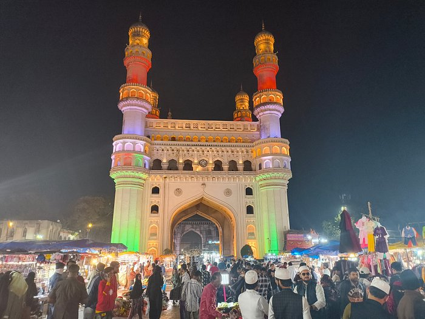

Famous Places
Ramoji Film City

Ramoji Film City is an integrated film studio facility located in Hyderabad, India. Spread over 2,000 acres (810 ha), it is recognized as the world's largest film studio complex by the Guinness World Records. Established in 1996 by Telugu media proprietor Ramoji Rao, it has been described as a "city within a city" by The Guardian.
Golconda Fort

Golconda is a fortified citadel and ruined city located on the western outskirts of Hyderabad, Telangana, India. The fort was originally built by Kakatiya ruler Pratāparudra in the 11th century out of mud walls. It was ceded to the Bahmani Kings from Musunuri Nayakas during the reign of the Bahmani Sultan Mohammed Shah I, during the first Bahmani-Vijayanagar War.
Charminar
The Charminar is a monument located in Hyderabad, Telangana, India. Constructed in 1591, the landmark is a symbol of Hyderabad and officially incorporated in the emblem of Telangana. The Charminar's long history includes the existence of a mosque on its top floor for more than 425 years.